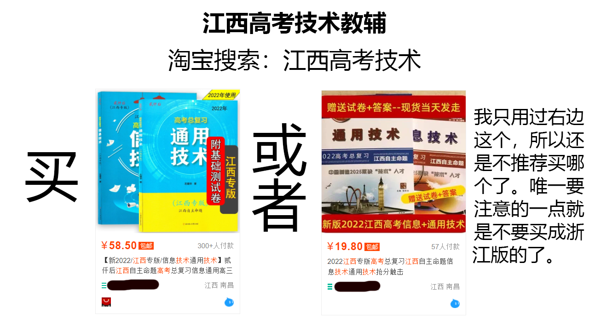
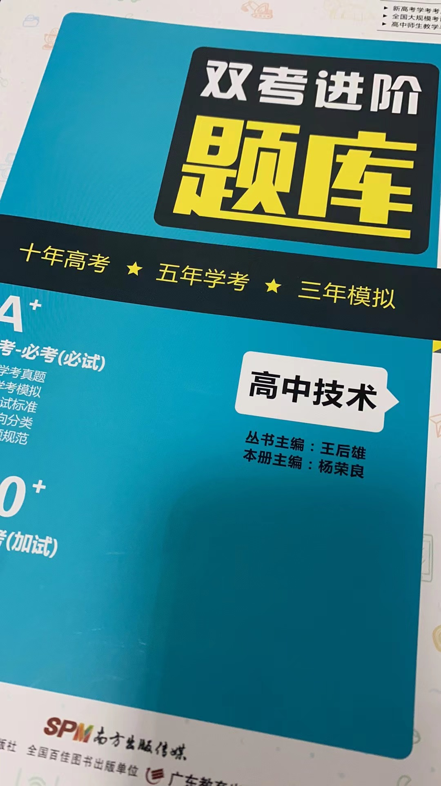
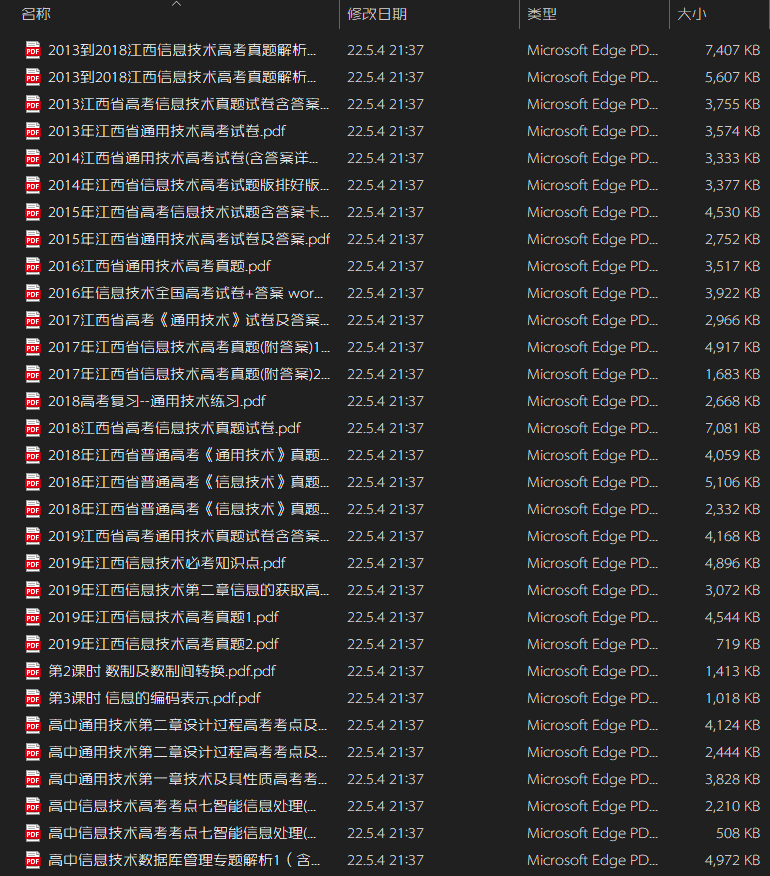
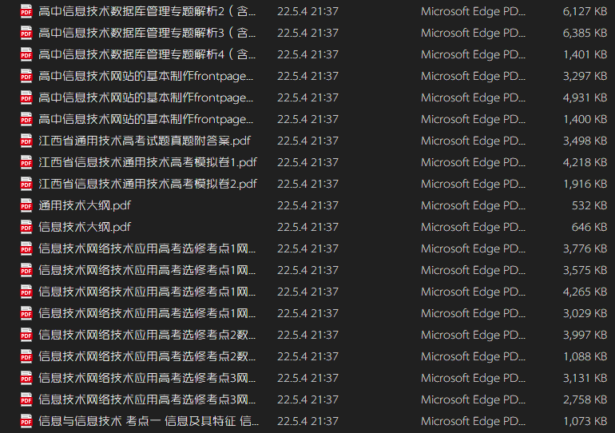
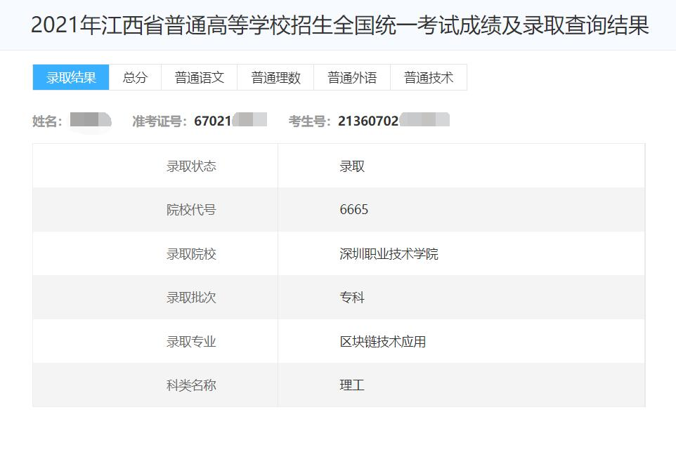
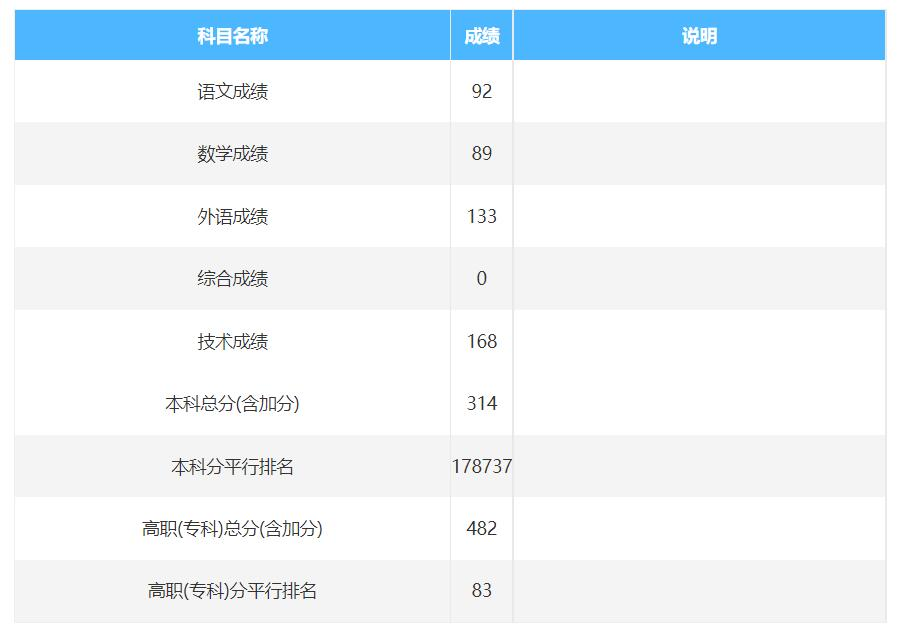

技术资料分享
江西用的是旧版教材，买的时候看下封面跟上方图片中的是否一致
最近发现有人拿我整理的资料卖钱，各位看到的话千万不要理！
有时间的可以截图发给我，非常感谢！下面是动态链接：
https://t.bilibili.com/660164652678774790
一共有 {{count}} 人来过， {{current}} 人正在陪你一起看
📒技术考试大纲📒
http://www.jxeea.cn/art/2022/3/18/art_26671_3891008.html全程笔试，考试不上机！考试不上机！考试不上机！重要的事情说三遍。
💻通用技术、信息技术网课视频💻
https://www.ixigua.com/home/1626897965393278
https://space.bilibili.com/502164943
哔哩哔哩BV1b741177tC 通用技术草图绘制技巧
哔哩哔哩BV1PK411g7vy 信息技术进制转换干货
🧱个人整理 通用技术复习提纲🧱
📚技术教辅 江西专用📚
必备，巩固知识主要靠这个。
虽然都不怎么样，但是目前市面上只有这两款。
这个是浙江高考版的，别买，超纲了！！！
❗重点 资料整理(含历年高考卷)❗
 共166MB，文件太大了，所以用网盘分享。
可以挑一些打印出来，不用全打印。
📁文件夹📁 提取码:6666
https://pan.baidu.com/s/1vesq6WihgMDec1GT3X_0Bg
📦压缩包(已过时，新的资料在文件夹里)📦 提取码:2333https://pan.baidu.com/s/12EUVObIvzTlnr0tcIcYVtg
📰2021年各院校分数线📰
江西省教育考试院发布。快来挑选您心仪的大学吧！
http://www.jxeea.cn/art/2021/8/5/art_26671_3524295.html《江西省2021年普通高校招生高职（专科）平行志愿投档情况统计表》
注：前半部分为文科分数线，后半部分为理科分数线。
建议下载“掌上高考”APP，了解院校、专业以及填报志愿必备。
高考完后对填报志愿有疑问(比如征集志愿)，欢迎加群提问，完全无偿解答！
💡(选看)如何自学技术💡
 
⠀⠀⠀首先，技术考试不难，不用担心考试时间不够，熟练的话1个小时不到就能做完。但是这并不代表技术可以随便学，因为技术是最好提分的，学技术的收益远大于主科，毕竟最后几个月想提主科的分数是非常困难的。
⠀⠀⠀技术提分方法很简单：刷就完事了。先刷课本、练习册，课本至少刷个3遍；还有把历年的高考技术卷子都刷一遍，可以了解考点和题型，错题要记录下来。
下定决心考专科的，可以用理(文)综课的时间来学习技术。
建议时间分配：50%主科，50%技术。
我们学校的照片(都是随便拍的)
🍂完 · END🍂


本网站无域名，容易被微信、QQ等社交软件拦截，建议使用浏览器访问。
CopyRight©2022 AmanoRenard All Rights Reserved